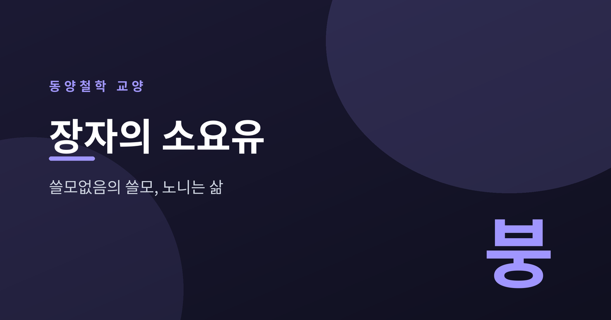
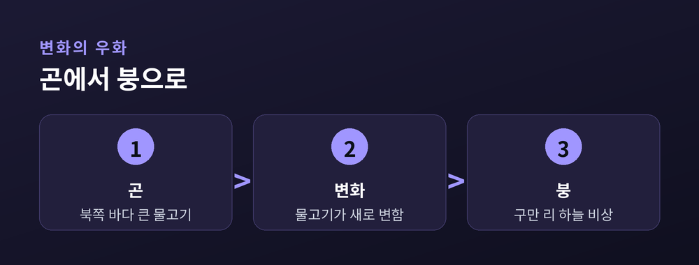

쓸모없음의 쓸모, 자유로이 노니는 삶

세상은 늘 우리에게 쓸모를 묻습니다. 무엇에 도움이 되는지, 어떤 성과를 냈는지 끊임없이 계산합니다. 장자(莊子)의 첫 편 「소요유(逍遙遊)」는 그 물음 자체를 뒤집습니다.
「소요유」는 북쪽 바다의 물고기 이야기로 시작합니다. 이름은 곤(鯤). 크기가 몇천 리인지 알 수 없는 물고기입니다. 이 곤이 변하여 붕(鵬)이라는 거대한 새가 됩니다.
붕은 남쪽 바다로 날아가기 위해 회오리바람을 타고 구만 리를 오릅니다. 그 아래에서 매미와 작은 비둘기는 웃습니다. "우리는 힘껏 날아도 나무에 겨우 닿는데, 무엇하러 구만 리를 오르는가."
곤과 붕은 흔히 인식의 도약을 상징하는 우화로 읽힙니다. 작은 것의 시야로는 큰 것의 세계를 헤아리기 어렵다는 것입니다.
북쪽 바다에 물고기가 있으니 그 이름은 곤이라. 곤의 크기는 몇천 리인지 알 수 없다.

그렇다면 붕은 완전히 자유로울까요. 장자는 여기서 멈추지 않습니다. 붕조차 바람이 쌓여야 날 수 있습니다. 무언가에 기대는 존재입니다.
열자(列子)는 바람을 타고 다니다 보름 만에 돌아왔다고 합니다. 땅을 딛는 수고에서는 벗어났으나, 바람이라는 조건을 여전히 기다립니다. 이것을 유대(有待), 곧 기댐이 있는 상태라 부릅니다.
장자가 그리는 참된 자유는 무대(無待)입니다. 아무것에도 기대지 않는 경지입니다. 그 자리에서 지인(至人)은 자기를 내세우지 않고(無己), 신인(神人)은 공을 자랑하지 않으며(無功), 성인(聖人)은 이름에 매이지 않습니다(無名).
무대의 경지는 세 사람의 비움으로 이어집니다. 자기를 내세우지 않는 지인, 공을 자랑하지 않는 신인, 이름에 매이지 않는 성인입니다.
편 끝에서 친구 혜자(惠子)가 장자에게 따집니다. 큰 가죽나무 저(樗)가 있는데, 옹이지고 굽어 목수도 거들떠보지 않는다고. 자네 말도 그처럼 크기만 하고 쓸모없다고 말입니다.
장자는 되받습니다. 그 나무를 아무것도 없는 드넓은 들, 무하유지향(無何有之鄕)에 심어 그 곁에서 노닐라고. 쓸모없기에 도끼에 잘리지 않고 천수를 누린다는 것입니다.
여기서 무용지용(無用之用), 쓸모없음의 쓸모라는 역설이 나옵니다. 쓸모 있는 것은 그 쓸모 때문에 도리어 다치기 쉽습니다. 다만 이 이야기는 게으름의 옹호가 아니라, 세상의 잣대 바깥을 보라는 권유로 읽는 편이 온당합니다.
「소요유」의 뜻은 하나로 굳어 있지 않습니다. 진(晉)의 곽상(郭象)은 붕과 참새의 우열을 나누지 않았습니다. 저마다 제 본성(適性)에 맞게 살면 그것이 곧 소요라 보았지요.
반면 장자 본문에는 작은 것과 큰 것의 차이를 분명히 두는 대목이 함께 있습니다. 그래서 곽상의 주석은 원문과 결이 다르다는 지적도 학계에 있습니다.
이 편은 「제물론(齊物論)」의 만물 평등, 무위자연(無爲自然)의 사유와도 이어집니다. 소요유는 결국 마음의 문제입니다. 몸이 어디에 있든, 잣대에서 놓여난 자리에서 노니는 것.
쓸모를 묻는 세상에서 장자는 다른 물음을 건넵니다. 크게 보고, 무엇에도 매이지 않고, 그저 노닐 수 있는가.
무용지용 — 쓸모없어 보이는 자리에 오히려 온전한 삶이 깃든다.
오늘 나를 재던 그 잣대는, 정말 내 것이었을까요.